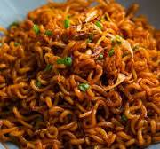

INGREDIENTS
These are the ingredients needed to make the indomie noodles dish
excluding the usuals like a pot and water.
- Packed noodles
- Onions
- Peppers
- Tomatoes
- Indomie spices
STEPS
These are the step to follow when making the indomie dish.
- Get a pot and add water into it; about 1 cup of water.
- Heat the pot of water on a stove until it begins to boil.
- Open your pack(s) of noodles and put it in the boiling water. But make sure to remove the spice inside the pack before doing so.
- Allow the plain noodles to boil in the water until it becomes soft but not too soft like spaghetti.
- Get a filter and drain the water away leaving the noodles in the filter.
- Get another pot or a pan and add a teaspoon of groundnut oil.
- Add your chopped onions, peppers and tomatoes to the pan containing oil and let it cook for a minute or two.
- Now add the indomie spice to your sauce mix(onions, peppers and tomatoes) in the pan.
- Stir this mix evenly and then add your filtered noodles to the mix.
- Stir properly for even distribution. Your dish is ready!

Back
Next